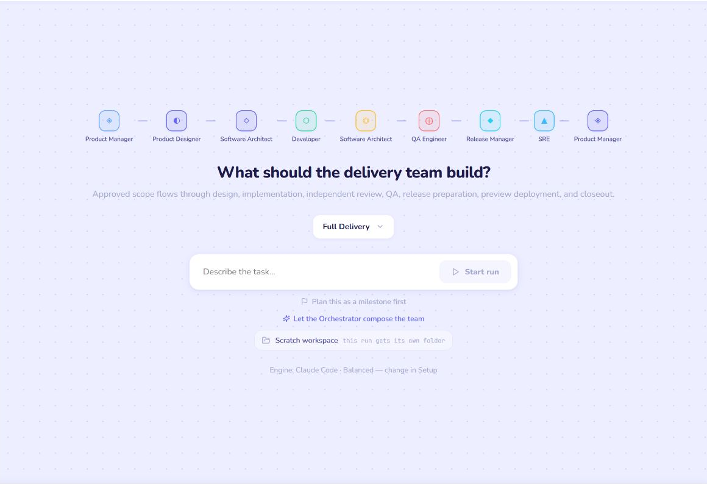
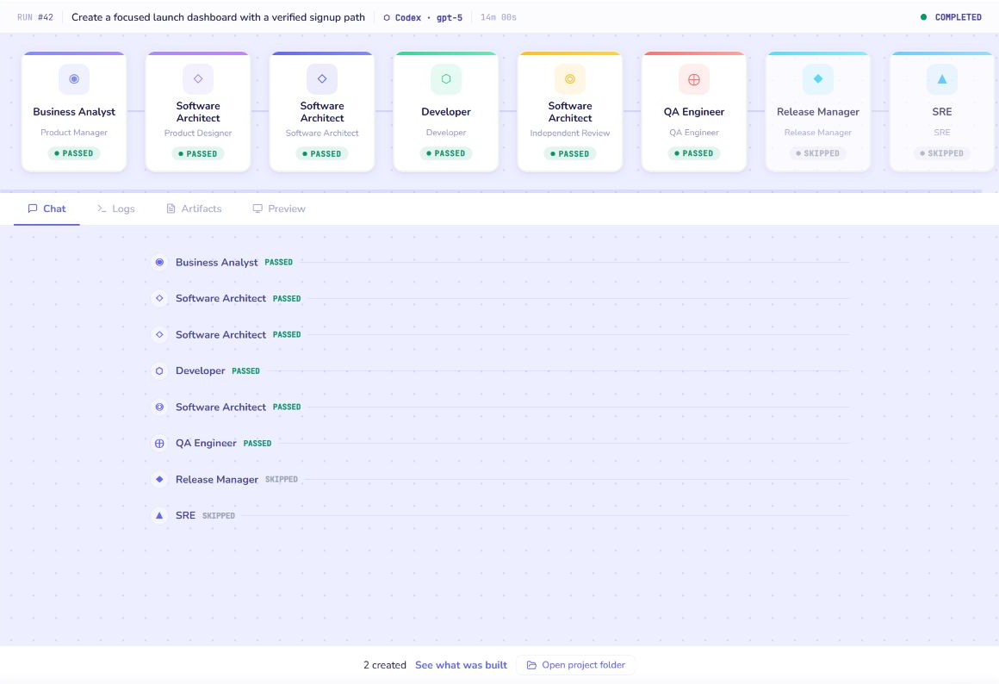
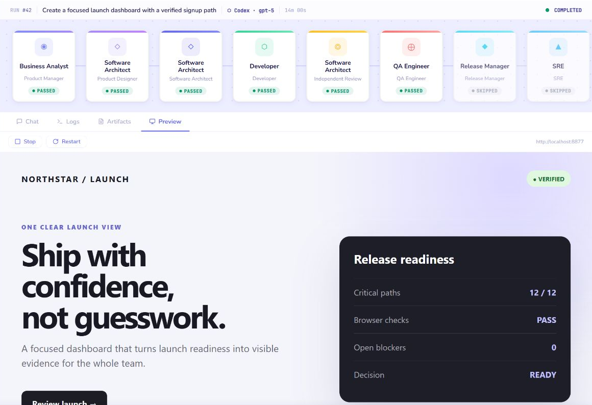

- Goal
- What must become true
- Constraints
- Stack, limits, non-negotiables
- Acceptance
- Evidence that proves it works
- Team
- Professions and model depth
- Flow
- Stages, gates, and restart points
LOCAL · OPEN · HARNESS-AGNOSTIC
From vision to production—
and every version after.
A prepared AI development team that turns intent into working software, then keeps it evolvable.
One system. Every stage. Every version.
01THE REAL BOTTLENECK
The first AI build is easy.
Keeping it healthy is hard.
PROMPT
→
IMPRESSIVE DEMO
- 01Context fadesDecisions stay in chats, not in the project.
- 02Changes collideSmall iterations create unpredictable side effects.
- 03Handoffs go manualReview, testing, release, and follow-up drift apart.
The hard part starts after v1.
02THE PRODUCT + THE LOOP
A prepared AI team that
keeps the product moving.
Each profession owns a stage. Every handoff preserves context, evidence, and a clear route into the next iteration.
01PMvision + scope
→
02DESIGNexperience
→
03ARCHITECTsystem
→
04DEVELOPERbuild
→
05REVIEW + QAchallenge + verify
→
06EVIDENCEfindings + artifacts
↖NEXT ITERATION
Results become context for the next improvement.
Prepared professions · durable handoffs · one evolving product
03THE CORE IDEA
Turn vision into an executable model.
Your vision
plain language
→
→
Precise execution
adjustable over time
EXECUTED THROUGH YOUR HARNESS
Claude CodeCursorCodex
VISION
04
Release + deploy automationComplete the path from verified product to production.
SOONSelf-improving teamsAdvance the product with minimal human input—and beyond the initial goal.
PLANNEDWORKING PRODUCT · 01
Compose the team.
Watch every stage.


Real local UI · deterministic demo data · no private project content
05WORKING PRODUCT · 02
See what the team
actually built.
The implementation stays visible inside the run—not buried in a terminal transcript.

“DOESN’T THIS ALREADY EXIST?”
Yes.
Is this a new harness?YES
Is this another workflow system for AI?YES
Does it tackle problems addressed by many AI libraries?YES
Can Lovable build a first version?YES
Can Cursor, Claude Code, or Codex change code?YES
THE DIFFERENCE
07
Those products solve slices. Isotopy connects the whole delivery loop—from a simple vision to a precise, evolvable system.
WHY ISOTOPY
The market has the pieces.
Isotopy connects them.
CATEGORYSUPERPOWERTHE GAP
Prompt-to-app buildersIdea → working appThe platform owns much of the process
Coding harnessesTask → code changesThe unit is still a coding session
Workflow frameworksDurable orchestration primitivesYou assemble the delivery product
Agent workforcesRoles, work, governanceNot an opinionated SDLC
IsotopyVision → verified evolutionPrepared professions + full delivery loop
LOCAL OWNERSHIPDURABLE STAGESVISIBLE GATESREPO EVIDENCEONGOING EVOLUTION
Category descriptions checked against official documentation for Lovable, Cursor, CrewAI, LangGraph, and Paperclip.
08MAIN FUNCTIONS
The full delivery loop,
already structured.
- 01Intent intakeTurn a goal into clear, bounded work.
- 02Team compositionSelect professions and reasoning depth.
- 03Durable runsResume after interruption without repeating work.
- 04Human gatesApprove scope and consequential decisions.
- 05Git-native artifactsKeep plans, evidence, and history with the repo.
- 06Stage restartRetry the right step—not the entire journey.
- 07Independent reviewChallenge the implementation against intent.
- 08End-to-end verificationExercise the result in a real browser.
- 09Embedded previewSee what the agents built inside the workspace.
- 10Milestones + backlogTurn findings into the next controlled iteration.
THE NEXT STEP IS SMALL
Follow the repo.
Try one real feature.
Bring a project, a goal, and the tools you already use. Let Isotopy carry the work from intent to evidence.
github.com/smekai/isotopy ↗Build the first version. Keep building without losing control.
10